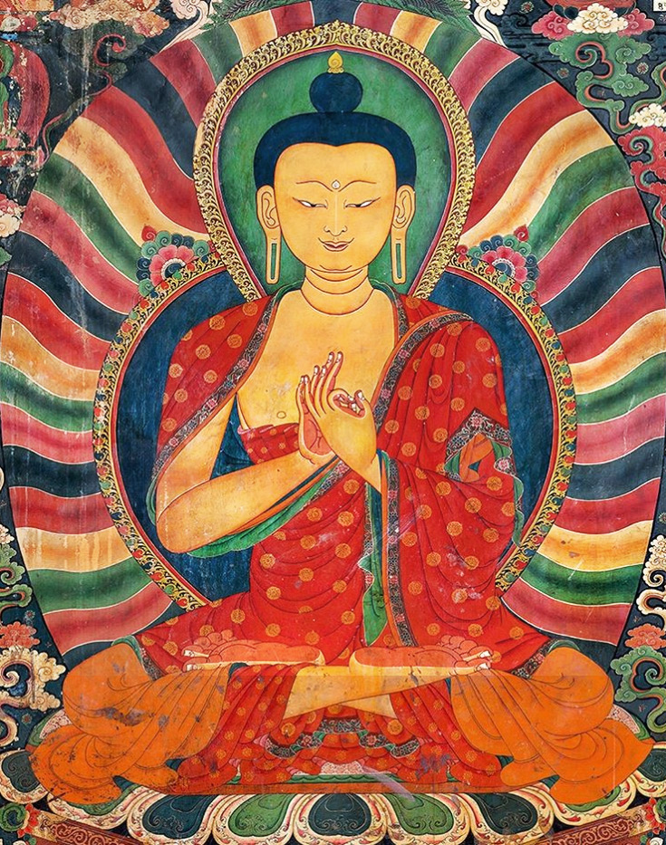
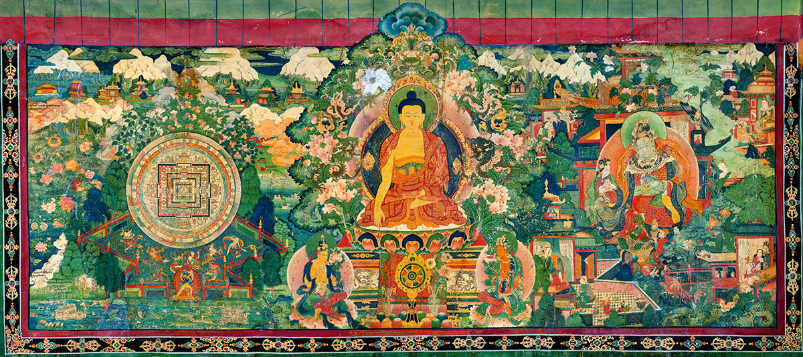
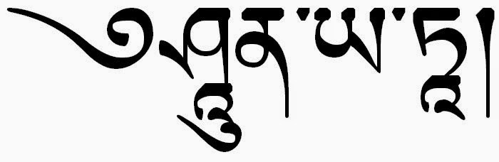

7 La perfezione della saggezza
Introduzione
Questo capitolo esamina il ruolo che la saggezza (prajñā) ha all’interno del percorso di sviluppo spirituale del bodhisattva. Per il buddismo, la saggezza (prajñā) – ovvero la gnosi o intuizione della vera realtà delle cose – è l’unico strumento valido che consente di evitare le insidie sulla via dello sviluppo spirituale. Ma che cosa sia prajñā non è immediatamente evidente e i dibattiti filosofici su questo punto si sono moltiplicati. Nei capitoli otto e none del Bodhicaryāvatāra, le preoccupazioni principalmente pratiche di Śāntideva lasciano dunque il posto a discussioni relative a sottili punti filosofici. Tuttavia, per Śāntideva, la filosofia è posta al servizio della coltivazione dell’intuizione contemplativa: alla fine, le preoccupazioni pratiche e teoriche di Śāntideva risultano essere una cosa sola – il dibattito filosofico non è mai separato dalle applicazioni pratiche.
Diverse caratteristiche del movimento Mahayana devono essere notate all’inizio per dare un senso al progetto di Śāntideva. Il Mahayana non era una scuola del buddismo, ma piuttosto una serie di interventi e innovazioni che spostavano l’enfasi, l’orientamento e l’aspirazione della tradizione precedente; questi interventi possono essere fatti risalire storicamente a scritture apocrife (Sūtra), come i Prajñāpāramitā Sūtra (Sutra della Perfezione della Saggezza) emersi intorno al primo secolo dell’era volgare che si sono sviluppati in una ricca letteratura di testi Mahayana.
Le nuove scritture non soppiantano del tutto i canoni precedenti tra gli aderenti alle idee Mahayana, ma ricevono uno status più elevato, mentre i materiali testuali precedenti sono spesso visti con sospetto, ovvero sono considerati come altamente problematici. Inoltre, il lavoro del filosofo del II secolo d.C. Nāgārjuna sulla vacuità è stato cruciale per lo sviluppo filosofico del Mahayana, comprese le trasmissioni del Buddismo in Cina e nel resto dell’Asia orientale, e, più tardi, in Tibet.
Le due innovazioni più importanti del Mahayana riguardano lo sviluppo dell’ideale del bodhisattva, in particolare la sua enfasi sulla compassione universale, e il fatto che le idee filosofiche sulla vacuità vengono messe in primo piano. Entrambi questi temi sono centrali nel pensiero di Śāntideva.
Consideriamo per primo l’ideale del bodhisattva. Nel buddismo che gli studiosi moderni chiamano non-Mahayana o Theravada, il Buddha viene considerato come un esempio morale e come una guida lungo il percorso verso la liberazione. Il lungo viaggio del Buddha verso il risveglio, che ha richiesto innumerevoli vite, è istruttivo, ma generalmente non è considerato come un percorso che le persone comuni possono emulare. Invece, i praticanti non-Mahayana cercano di diventare degli arhat, ovvero persone liberate che però non raggiungono il livello del Buddha. Durante le sue vite precedenti, mentre praticava le perfezioni necessarie per scoprire il sentiero buddisti, il Buddha era chiamato “bodhisattva”, cioè buddha-in-formazione. Allontanandosi dal punto di vista Theravada, le scritture Mahayana suggeriscono che la vita del Buddha, incluso il suo lungo percorso come bodhisattva, può essere preso come esempio per tutti i praticanti.
Ciò che rende notevole il sentiero del bodhisattva è che non riguarda esclusivamente la liberazione, o il superamento dalla sofferenza della rinascita, il karma e la rimozione delle contaminazioni tossiche, caratteristiche queste del sentiero di purificazione e libertà soteriologica dell’arhat. Tutti concordano sul fatto che ciò che il Buddha è stato in grado di ottenere non è stato solo questa liberazione personale, ma anche la capacità di scoprire la verità ultima delle cose, di insegnarla agli altri e, quindi, di salvare gli altri esseri senzienti. L’obiettivo di un bodhisattva è la realizzazione delle perfezioni che favoriscono la scoperta delle verità ultima delle cose e la messa in atto delle pratiche concrete che contribuiscono alla liberazione degli esseri dalla sofferenza nel samsara.
Se diventare un Buddha è l’obiettivo (piuttosto che diventare “solo” un arhat libero dal samsara), allora le perfezioni diventano il sentiero – soprattutto la compassione, che più di ogni altra perfezione caratterizza questo obiettivo superiore. Inoltre, il percorso diventa molto più lungo: sebbene sia concepibile diventare un arhat in una singola vita, il percorso del bodhisattva, modellato sulle innumerevoli vite passate del Buddha, si allunga considerevolmente. In quanto pensatore Mahayana, Śāntideva mira non al percorso di purificazione volto ad ottenere la liberazione individuale di un arhat, ma a questo ideale molto più grande che intende salvare tutti gli esseri.
La seconda grande innovazione del Mahayana è lo sviluppo degli insegnamenti della vacuità. La vacuità non era sconosciuta ai Theravada. Ma nei Prajñāpāramitā Sūtra e nell’opera di Nāgārjuna – e per Śāntideva, sei secoli dopo – la vacuità diventa la posizione filosofica fondamentale. Il discorso sulla vacuità utilizza argomentazioni epistemologiche per stabilire una comprensione di tutti i fenomeni come condizionati e condizionanti e quindi “vuoti” di essenze intrinseche, autonome, indipendenti. Nel promuovere la vacuità, i filosofi Madhyamaka si oppongono alle tradizioni dell’Abhidharma dell’India settentrionale che postulavano un’ontologia della realtà ultima e, nel Bodhicaryāvatāra, Śāntideva fa riferimento ad una lunga storia di ragionamenti metafisici ed epistemologici per smantellare tali visioni metafisiche. Questa discussione sulla vacuità, che viene riproposta nel Bodhicaryāvatāra, ha aperto un ampio dibattito, tra gli studiosi tradizionali e moderni, sul significato della vacuità. Ci si è chiesti se il risultato di questo lavoro filosofico si traduce in una posizione sulla realtà ultima – ovvero l’idea che tutte le cose sono vuote – o se, alla fine, questo lavoro filosofico si limita “semplicemente” a smantellare tutte le posizioni teoriche, quali esse siano, inclusa la stessa vacuità.

7.1 Le due verità
Una distinzione chiave nel contesto Mahayana qui rilevante è la distinzione tra le “due verità” (satyadvaya), la verità “ultima” (che descrive come stanno veramente le cose; paramārtha-satya) e “convenzionale” (“relativa” o “superficiale”; saṃvṛti-satya). Da un lato la realtà assoluta, “il silenzio dei santi”, «non comunicabile ad altri, pacificata, non dispiegata dallo spiegamento del pensiero discorsivo, priva di rappresentazioni soggettive» (Madhyamakakārikā, XVIII, 9), e dall’altro lato il vario immaginare discorsivo, concepito bensì come una specie di ignoranza innata, impotente a cogliere la realtà cosi com’è, ma, se bene usato, valido strumento, l’unico, anzi, che abbiamo, per raggiungere la vera realtà.
Nel suo Trattato Fondamentale sulla Via di Mezzo (Mūlamadhyamakakārikā), Nāgārjuna afferma:
Il Dharma che viene insegnato dai Buddha,
Si basa completamente su due livelli della verità:
Il livello convenzionale della verità mondana,
E il livello della verità ultima.
Śāntideva afferma:
IX:2. Vi sono due verità, la verità relativa e la verità assoluta. La verità assoluta trascende il dominio della mente. La mente è la realtà relativa.
Secondo l’interpretazione di Prajñākaramati, “Saṃvṛti è così chiamato perché con esso la comprensione di ciò che è così com’è è nascosta, o occlusa… Ignoranza, stupore ed errore sono sinonimi [di saṃvṛti]. Poiché l’ignoranza, essendo l’imputazione delle”forme delle cose inesistenti [a ciò che esiste] … è saṃvṛti”. Così, per Prajñākaramati “occultamento” ha la precedenza su “convenzionale” come senso primario di saṃvṛti.
La discussione di Prajñākaramati sul significato di ciò che è “ultimo” (paramārtha) rivela una mescolanza di due temi che sono stati associati a questo termine sin dall’antichità. Da un lato, seguendo una tradizione stabilita nell’Abhidharma (cioè, la prima scolastica buddista), “ultimo” è ciò che è in definitiva reale, è ciò che “resiste” a qualsiasi procedura analitica di riduzione. Per Vasubandhu, filosofo del V secolo, questo significa due cose: ciò che è “ultimo” corrisponde agli atomi fisici e/o fenomenici, o dharma, di cui è costituita la realtà (fisica e fenomenica). Per Prajñākaramati pensatore Madhyamika, tuttavia, l’analisi “arrestarsi” davanti a tali “atomi” non ulteriormente riducibili. L’analisi deve continuare fino a rivelare la contingenza radicale di tutti i fenomeni condizionati, ovvero la loro vacuità. In questo secondo senso, il significato di paramārtha corrisponde a “assenza dell’essere intrinseco” di tutti i dharma, ovvero la vacuità.
Il valore del nostro pensiero non sta nella sua realtà (esso è, per definizione, irreale) ma nella sua effettività pratica. Sia l’acqua reale, sia l’acqua di un miraggio, nella misura che sono immagini discorsive, sono ambedue ugualmente insussistenti, prive di natura propria, vuote. Questa loro vacuità non toglie tuttavia che la prima sia praticamente efficiente - nel senso che, raggiunta, è in grado di dissetare, ecc. - e l’altra, viceversa, delusiva. L’errore ha due facce, di cui l’una positiva, utile, e l’altra mera fonte di delusione e, da questo lato, doppiamente erronea.
Il primo compito di chi cerca la verità è quello di distinguere fra errore utile ed errore disutile o dannoso. L’errore, unico strumento di verità, è, religiosamente, la «compassione» (karunā). la bontà effettiva e instancabile, il senso di simpatia e di uguaglianza verso tutte le creature che soffrono, che deve necessariamente avere il Bodhisattva, la «creatura in risveglio», colui che ha fatto voto di sempre aiutare gli altri e di far loro raggiungere l’intuizione della vacuità, cioè la «gnosi» (prajñā).
Il seguace del Cammino di Mezzo si muove di continuo fra due diversi piani di realtà, fra due verità, fra il fine e il mezzo, fra la «gnosi» e la «compassione». La dimenticanza della gnosi, della vacuità, lo espone al pericolo dell’eternalismo (śāsvatavāda) e, viceversa, se perde di vista la compassione, si rizza immediatamente contro di lui il demone del nichilismo (ucchedavàda). Nel momento devozionale questi due aspetti del Cammino di Mezzo prendono forma personale e concreta nelle due figure mitiche di Mañjuśrῑ e di Avalokiteśvara. Mañjuśrῑ, che tiene nella destra la spada che recide avidyā (la nescienza) e nella sinistra il libro che racchiude ogni conoscenza, è la gnosi, la vacuità, il fine. Avalokiteśvara, il «Signore che guarda pietosamente», è, com’indica il nome, l’incarnazione della compassione infinita dei bodhisattva, di quest’«errore» consapevole e volontario, che è l’unica via che porta alla gnosi.
La distinzione fra gnosi e compassione è anch’essa di ordine puramente empirico, e, in realtà, esse sono una cosa unica. «La diversità fra la vacuità e la compassione (leggiamo in alcuni versi citati da un autore del X secolo, Advayavajra) è simile a quella della lampada e della luce. L’unità fra la vacuità e la compassione è simile a quella della lampada e della luce. La vacuità non è diversa dalle cose né v’è cosa senza la vacuità, in quanto che cose e vacuità sono due idee inseparabilmente connesse, né più né meno che l’idea di prodotto e quella di impermanente.»
L’affermazione della realtà vera non implica l’eliminazione della realtà relativa. La realtà vera non può essere, anzi, concepita indipendentemente dalla realtà relativa. La realtà, il nirvāna, secondo Nāgārjuna, non è diversa dalla realtà relativa, dalle cose del mondo, ma consiste semplicemente nella conoscenza, visione del mondo, così come veramente è, cioè a dire, nella rimozione dell’illusione che ce lo fa sembrare doloroso e insufficiente». Il nirvāna non è altro che la piena conoscenza (parijñāna) dell’esistenza fenomenica.
Tra la trasmigrazione e il nirvāna non c’è la più piccola differenza. Tra il nirvāna e la trasmigrazione non c’è la più piccola differenza. Quello che è il confine del nirvāna, questo è anche il confine della trasmigrazione. Tra essi due non c’è neppure la minima diversità. (Madhyamakakārikā, XXV, 19-20.)
Il tema di un’analisi che, quando viene spinta agli estremi, non trova un fondamento ultimo, è associato ad un secondo tema, quello del carattere finale, ovvero del fine, del percorso soteriologico: la meta finale è l’“abbandono delle afflizioni”. Poiché paramārtha, infatti, può significare, non solo “significato ultimo” in senso analitico, ma anche paramapuruṣārtha, cioè il “termine più alto dell’uomo”, ovvero la liberazione (mokṣa) [dalla sofferenza].
Nell’interpretazione di Prajñākaramati, dunque, il risultato ultimo dell’analisi dei fenomeni non è solo quello di metterne in luce la necessaria vacuità; è anche quello di illustrare il fatto che il risultato ultimo, o di maggior valore, dell’attività umana è la liberazione delle afflizioni. La liberazione delle afflizioni, dunque, risulta intrinsecamente legata alla comprensione della vacuità dei fenomeni.
7.2 La liberazione attraverso la realizzazione della vacuità
Per i buddisti Mahayana, come Śāntideva, la conoscenza non è un fine in se stesso: non è tanto la conoscenza che è in gioco, quanto la rimozione della sofferenza che dipende da tale conoscenza. Il tipo di conoscenza che consente l’eliminazione della sofferenza si chiama prajñā. Questo termine è spesso tradotto come “saggezza”, “conoscenza superiore” o “discriminazione”, ma sembra essere più vicino al significato di “intuizione”, “conoscenza non discriminante” o “apprensione intuitiva”. La prajñā è la “conoscenza/saggezza suprema” che consente di raggiungere in modo diretto il risveglio spirituale (bodhi). La saggezza, prajñā, è anche detta “madre di tutti i Buddha”, perché la saggezza consente il conseguimento della Buddità. La “conoscenza/saggezza suprema” si ottiene, non solo tramite lo studio e la riflessione intellettuale, ma piuttosto per mezzo della pratica meditativa. La prajñā pone fine al “fallimento epistemico”, ovvero ad avidyā (la nescienza), che causa la sofferenza (dukkha).
IX:1. Chi desidera la cessazione del dolore, deve dunque suscitare in sé la gnosi.
Il percorso del bodhisattva conduce all’autentica cognizione della realtà così come veramente è (yathābhūta), ovvero alla visione della vacuità.
yathābhūta: il modo in cui le cose sono in realtà; un termine usato per designare la vera natura dei fenomeni, la realtà delle cose così come sono in sé stesse prima della loro organizzazione deformata dal nostro pensiero o l’esperienza diretta non mediata dalla sovrapposizione di concetti falsi come l’idea di un’identità o di un sé intrinseco e permanente (ātman). In quanto tale, il termine è usato in Mahāyāna come sinonimo di vacuità (śūnyatā), attualità (tattva), talità o quiddità (tathatā) e così via.
7.2.1 La corda e il serpente
L’esempio classico per illustrare l’eliminazione della nostra sofferenza attraverso lo sviluppo della saggezza è l’esempio della corda e del serpente. Se c’è una corda che è avvolta in una stanza buia e guardiamo la corda senza sapere che è una corda, possiamo scambiarla per un serpente. Se pensiamo che sia un serpente, allora andiamo nel panico, ci spaventiamo e siano angosciati. L’idea sbagliata è la causa della nostra sofferenza ed è essa stessa causata semplicemente dalla nostra ignoranza. Ignoriamo la vera natura della corda e crediamo che sia un serpente. La soluzione per eliminare la nostra angoscia è sapere che ciò che abbiamo visto è davvero una corda e che la nostra convinzione che fosse un serpente era solo un’illusione. È attraverso questa saggezza di vedere la vera natura della corda che, in questa situazione, possiamo eliminare la nostra sofferenza. Allo stesso modo, tutte le grandi sofferenze e i problemi della nostra vita derivano dal non conoscere la natura dell’illusione che è la nostra percezione del mondo.
7.2.2 La prajñā nel Bodhicaryāvatāra
Śāntideva afferma esplicitamente, fin dall’inizio del Bodhicaryāvatāra, che la gnosi della vacuità, la quale porta a vedere le cose così come sono, eccede le abilità del nostro intelletto razionale:
IX:2. La verità assoluta trascende il dominio della mente. La mente è la realtà relativa.
Il nostro scopo è qui eliminare la causa del dolore: il pensiero che i fenomeni abbiano una vera esistenza.
È la reificazione della realtà, ovvero la convinzione che i fenomeni siano dotati di svabhāva, la causa della sofferenza. Se consideriamo gli enti (bhava) come reali, cioè dotati di un’esistenza indipendente, allora finiamo per rimanere attaccati ad essi, anche se non sono altro che nostre proiezioni, reificazioni del flusso in continuo cambiamento della nostra esperienza fenomenica.
Svabhāva significa letteralmente “natura intrinseca”, “essere proprio” o “divenire proprio”. È la natura intrinseca, la natura essenziale o l’essenza degli esseri e dei fenomeni. Tutte le scuole Mahāyāna rifiutano l’esistenza di una tale natura intrinseca e sostengono che tutti i fenomeni sono privi di qualsiasi tipo di svabhāva. Secondo l’Abhidharma, lo svabhāva era l’unico e inalienabile ‘segno’ o caratteristica per mezzo del quale le entità potevano essere differenziate e classificate. Identificando lo svabhāva di un’entità si potrebbe produrre una tassonomia degli esistenti reali. Ad esempio, lo svabhāva del fuoco è stato identificato come calore e lo svabhāva dell’acqua è stato definito come fluidità. Così le scuole dell’Hīnayāna, pur negando un sé delle persone, accettarono nondimeno la realtà sostanziale di quegli elementi (dharma) che componevano il mondo in generale, inclusi cinque skandha del soggetto individuale. A partire da Nāgārjuna, il Mādhyamaka mina questo insegnamento negando la realtà sostanziale non solo del sé (ātman) ma di tutti i fenomeni. Tutte le entità sono quindi viste come simili per la mancanza di un modo d’essere discreto o dell’essenza del sé (svabhāva), e per la condivisione invece dell’attributo comune della vacuità (śūnyatā).
Secondo Śāntideva, il superamento della reificazione del reale può essere ottenuto solo attraverso la realizzazione della vacuità (śūnyatā), ovvero, con la cessazione del pensiero discorsivo.
IX:41. La liberazione si ottiene per la vita delle Sante Verità; a che pro’ dunque questa tua teoria dela vacuità? Ma perché, secondo la scrittura, (io ti rispondo) il risveglio, senza questa via, non si ottiene.
Si noti che, in questi versi, Śāntideva non introduce śūnyatā mediante una giustificazione di tipo ontologico, ma mediante l’autorità delle Scritture, ovvero, potremmo dire, in termini pragmatici, sottolineandone l’efficacia. In seguito Śāntideva afferma che la mente è, sì, in grado raggiungere momenti di purezza anche senza la realizzazione della vacuità; ma così facendo inevitabilmente finisce per il ricadere nei normali stati di nescienza; ovvero, senza la realizzazione della vacuità, la mente continua ad oscillare, al di fuori del controllo dell’individuo, tra nescienza e purezza.
IX:49. Senza al vacuità, il pensiero è legato e si riproduce continuamente, così come accade nell’estasi detta incosciente. Perciò bisogna coltivare la vacuità.
In altre parole, Śāntideva afferma che non è sufficiente accontentarsi della capacità di entrare negli stati superiori della coscienza; bisogna anche raggiungere un grado più alto di saggezza (prajñā). Abbiamo visto che prajñā corrisponde alla realizzazione della vacuità, ovvero alla capacità non cadere più vittime dell’abitudine che ci porta ad attribuire un’esistenza intrinseca a quelle che sono solo le nostre proiezioni, ovvero alle categorie. Nelle parole di Nāgārjuna:
Quando cessa la nescienza (avidyā), non sorgono più le formazioni mentali (saṃskāra) — (MMk. 26.11a)
Saṃskāra è un termine difficilmente traducibile. Letteralmente significa “coefficienti” e si riferisce alle impressioni del karma passato, alle potenze o formazioni karmiche che costituiscono gli elementi responsabili della vita presente, in un cattivo o buono destino, secondo le azioni passate.
Questo termine significa anche ‘ciò che è stato messo insieme’ e ‘ciò che mette insieme’.
- Nel primo senso (passivo), saṃskāra si riferisce ai fenomeni condizionati in generale ma specificamente a tutte le “disposizioni” mentali. Queste sono chiamate “formazioni volitive” sia perché si formano come risultato della volizione sia perché sono cause del sorgere di future azioni volitive. Le traduzioni di saṃskāra in questo primo senso della parola includono “cose condizionate”, “determinazioni” e “formazioni” (o, in particolare quando ci si riferisce a processi mentali, “formazioni volitive”, “costruzioni mentali”, “fabbricazioni”, “costrutti mentali”).
- Nel secondo senso (attivo) della parola, saṃskāra si riferisce al karma che porta al sorgere condizionato, all’origine dipendente. Le traduzioni di saṃskāra in questo secondo senso della parola includono “coefficienti”, “fattori condizionati”, “cose condizionate”, “determinazioni”, “formazioni karmiche”.
Il termine saṃskāra compare nel Mahāparinibbāna Sutta. Le ultime parole del Buddha, secondo il Mahāparinibbāna Sutta, furono “Discepoli, questo dichiaro: tutte le cose condizionate (saṃskāra) sono transienti – lottate instancabilmente per la vostra liberazione”. (Pali: handa’dāni bhikkhave āmantayāmi vo, vayadhammā saṅkhārā appamādena sampādethā ti.). Il Buddha insegna dunque che tutti i saṃskāra sono impermanenti (anitya) e privi di essenza. Poiché sono impermanenti non possiamo fare affidamento su di essi. Non comprendere ciò è la nescienza (avidyā); invece, comprendere l’impermanenza è la saggezza (prajñā).
Śāntideva illustra un duplice beneficio che deriva da prajñā, ovvero dalla realizzazione della vacuità: in primo luogo, prajñā consente di agire con compassione; in secondo luogo, prajñā consente la rimozione delle contaminazioni emotive. Solo la saggezza della vacuità (prajñā) e i “mezzi abili” (upāya) dei bodhisattva consentono di rimuovere completamente le oscurazioni mentali:
IX:52. Indugiare e dimorare nel saṃsāra, liberato da ogni brama e da ogni paura, per ottenere il bene di chi soffre a causa dell’ignoranza: tale è il frutto che la vacuità produce.
IX:54. Le varie obiezioni contro la tesi della vacuità sono logicamente insostenibili. Quindi bisogna, senza esitazioni, coltivare la vacuità.
IX:53. Grazie alla vacuità, noi evitiamo le due estremità dell’attaccamento e del terrore. L’unica cosa che trattiene ancora il bodhisattva nell’esistenza, è la sua intenzione - dovuta a un utile offuscamento - di guarire le creature afflitte dai dolori. Questo è il frutto della vacuità.
Un punto di vista simile, laddove la liberazione dal samsara (mokṣa) è messa in relazione con il superamento della dimensione concettuale, è espresso nel Mahāyāna-Uttaratantra Shastra di Arya Maitreya:
La libertà dall’attaccamento consiste nelle
due realtà della cessazione e del sentiero.
Tra le sei qualità che caratterizzano il dharma, le prime tre qualità (essere inconcepibile, libero dal duale e non concettuale) spiegano la realtà della cessazione. Pertanto, dovrebbe essere compreso, ci dice Maitreya, che la libertà dall’attaccamento consiste nell’essere inconcepibile, libero dal duale e non concettuale. Le restanti tre qualità (essere puro, rendere manifesto ed essere un fattore riparatore) spiegano la realtà del sentiero. Pertanto, la libertà dall’attaccamento corrisponde alla realtà della cessazione; la causa della libertà dall’attaccamento è invece la realtà del sentiero. Insieme, la realtà della cessazione e la realtà del sentiero spiegano che
il dharma libero dall’attaccamento
È caratterizzato dalle due realtà della purificazione.
Per ciò che concerne le oscurazioni mentali, Maitreya dice nel Mahāyāna-Uttaratantra:
L’ostilità verso il dharma, la visione che esiste un’entità del sé,
La paura delle sofferenze del saṁsāra
E disprezzo per il beneficio delle creature
Sono le quattro oscurazioni. [ 1:32]

7.3 Anātman
La nozione della presenza di un sé in ogni cosa nel mondo è stata alimentata dalla religione e dalla cultura fin dagli albori della storia umana. Secondo le credenze tradizionali, è l’essenza o il sé che funziona come fondamento dell’entità di qualsiasi entità corporea o immaginabile. Il sé plasma qualcosa (che sia una persona, un animale, una cosa o anche un’idea) come ciò che è determinando come si presenta quando viene incontrato nel mondo. In breve, si crede che il sé conferisca ad ogni cosa “identità e autonomia individuali” (Glynn 2011:197).
Sebbene la tradizione promulghi la presenza di un sé “individuale” e autonomo in ogni cosa, e sebbene la nostra esperienza diretta del mondo fenomenico spesso ci inviti a credere in questa idea, il buddismo, in particolare la scuola Mādhyamika, ha proposto un punto di vista diametralmente opposto. Sfidando il punto di vista popolare che individua un’essenza in ogni cosa, il buddismo “ritiene un’illusione la nozione di un soggetto identico a sé stesso e che sussiste in modo indipendente” (Glynn 2011:197). Propugna invece una «consapevolezza dell’inessenza delle cose» (Misra, qtd. in Magliola 1984: 95). Ogni persona, cosa o idea, spiega il buddismo, è priva di un sé o di un’identità intrinseca. L’apparente sé di qualcuno/qualcosa invece di essere “immutabile” o “eterno” è effimero, esiste solo “mendiante l’essere in connessione” con altri fattori (Zhang 2011: 110). Dato che, secondo i buddisti, nessuna cosa può essere in sé persistente, essi affermano śūnyatā, cioè la vacuità o “l’assenza di essenza” come l’unica realtà del mondo.
Nāgārjuna, un importante pensatore buddista dell’India del II secolo e fondatore della scuola Mādhyamika, è noto per avere detto: “in nessun luogo esiste una natura intrinseca delle cose, qualunque cosa esse siano” (Nāgārjuna 2002: 95). Le parole di Nāgārjuna indicano il fatto che a nessuna cosa nel mondo fenomenico, sia essa qualcosa di corporeo o solo un’idea, possiamo attribuire un’essenza. In quanto tale, il mondo che conosciamo, il mondo che funge da fondamento della nostra conoscenza, il nostro concetto di realtà e irrealtà, è non sostanziale. La non-sostanzialità o non-essenzialità del mondo indica una naturale mancanza di sé di ogni dhárma (fenomeno). Tuttavia, non possedendo un sé, ogni dhárma diventa śūnya, cioè qualcosa di vuoto o di vacuo. Kumārajīva, un monaco buddista cinese del IV secolo, ha affermato: “tutti i dhárma sono vuoti” (Zhang 2011: 111). Secondo il buddismo, la mancanza dell’essenza o del sé del mondo è l’unica verità per cui si dovrebbe lottare. Ji Zang (549 - 623) dice: “La verità ultima … è … rendersi conto che non c’è alcun sé [nessuna essenza]” (Zhang 2011: 107, 110). Una volta che si riesce a realizzare la vacuità di ogni fenomeno, cioè si accetta śūnyatā come l’unica verità possibile, si raggiunge l’illuminazione.
7.4 La coproduzione condizionata
Per cercare di approfondire la nostra comprensione di śūnyatā, facciamo nuovamente riferimento a Nāgārjuna. Nāgārjuna caratterizza śūnyatā in questo modo:
Qualunque cosa sia sorta in modo dipendente, la chiamiamo vacuità. (MMc. 24:18a)
Nelle Parole chiare, Candrakīrti afferma:
La coproduzione condizionata, questa e non altro noi chiamiamo vacuità. La vacuità è una designazione metaforica. Questo e non altro il Cammino di mezzo. (24:18)
A differenza del significato convenzionale di vacuità, śūnyatā nel buddismo non indica il nulla. Secondo il buddismo, una cosa è śūnya, cioè senza un sé, a causa della sua origine relativa o “dipendente” (pratītya-samutpāda). In altre parole, non c’è essenza o sé trascendentale, nel nulla, poiché qualunque cosa, per la sua esistenza, dipende sempre da fattori diversi da se stessa. Nelle parole di Derrida, tutto ciò che si vede o si conosce porta sempre “la traccia” o il segno (1976: 75) di “ciò che non è … ciò che assolutamente non è” (1973: 143). L’essenza o il sé di ogni cosa cambia, dunque, in seguito al cambiamento nella natura dei fattori da cui dipende. Quindi, realizzare śūnyatā significa conoscere la natura effimera del fenomeno a causa della dipendenza del fenomeno da altri fenomeni. Per dirla diversamente, si è consapevoli della verità del mondo solo quando si comprende che “le cose non sono intrinsecamente reali” ma “esistono solo in relazione ad altre cose” (Mabbett 2011:26).
La consapevolezza dell’origine dipendente dei dharma ci libera dall’attaccamento all’essenza, cioè a un sé trascendentale. La realizzazione del carattere transiente del mondo fenomenico ci libera dalle afflizioni, in quanto le afflizioni sono sempre, in un modo o nell’altro, il risultato di un attaccamento all’essenza di qualcosa, e derivano dall’erronea concezione dell’essenza come immutabile. “La sofferenza nasce dal fatto che le persone si ‘aggrappano’ o si ‘attaccano’ a oggetti o idee come se fossero dotate di un essenza immutabile” (Zhang 2011: 110). Di conseguenza, l’alterazione della natura apparentemente immutabile degli oggetti e/o delle idee dell’attaccamento produce un senso di perdita. Un individuo illuminato, consapevole dell’origine dipendente di ogni fenomeno, è invece libero da queste sofferenze. Una tale persona non manca mai di vedere che “l’identità è costantemente in procinto di essere creata senza che sia mai possibile chiamarla un’identità” (Parco 2011: 18). Questa mancanza di esistenza intrinseca è, appunto, la “vacuità”. La dottrina Mādhyamika, a cui si richiama Śāntideva, presume che tutto, inclusi i nostri stati mentali, sorga in modo dipendente. Questa dipendenza di ogni fenomeno da altri fenomeni mina la nozione di un sé immutabile.
Questa è la dottrina della pratītya samutpāda, ovvero la “coproduzione condizionata”, detta anche “originazione interdipendente”, o “genesi dipendente”. Comprendere pratītya-samutpāda (e, in parallelo, śūnyatā) consente di “cessare l’ipostatizzazione”, ovvero consente di liberaci dalla reificazione delle nostre proiezioni mentali. E insegnare questa verità ultima a coloro che continuano a credere alla realtà delle proprie proiezioni mentali è lo scopo ultimo di Śāntideva:
IX:167. Quando, a queste creature torturate dal fuoco del dolore, quando potrò portare lenimento e pace colle piogge di felicità, prodotte dalle nubi dei miei meriti? Quando, a coloro che credono alla realtà dele cose, quando, appoggiandomi sulla verità relativa, potrò insegnare la vacuità? E d’insegnare con cura l’importanza di una provvista di meriti spirituali, non contaminata, s’intende, da nessuna nozione di realtà?
Ma come si può ottenere l’obiettivo che Śāntideva si pone? Il Bodhicaryāvatāra può essere letto in molti modi.
Secondo Amber Carpenter (2019), il Bodhicaryāvatāra fa parte di quel genere letterario detto protrèttico (o protrèptico) [dal gr. προτρεπτικός, der. di προτρέπω «promuovere, stimolare»], ovvero un genere letterario le cui opere tendono a esortare, a stimolare. Il Bodhicaryāvatāra ci esorta a trasformare noi stessi in modo tale da giungere ad un nuovo modo di vedere la realtà. Questo ri-orientamento cognitivo non si ottiene, secondo Śāntideva, all’improvviso e tutto in una volta, ma piuttosto mediante una lunga pratica: lo scopo del Bodhicaryāvatāra è proprio quello di guidarci in tale pratica. Per questa ragione, il Bodhicaryāvatāra può essere inteso come un’opera protrèttica. Un modo per leggere il Bodhicaryāvatāra è quello di considerarlo come un manuale di istruzioni per la meditazione. Secondo Śāntideva, infatti, il praticante deve (1) accettare la validità di śūnyatā come un insegnamento del Buddha, e (2) meditare su di essa.
Ricordiamo che il buddismo ha tradizionalmente diviso la pratica della meditazione in due fasi: il calmo dimorare della mente, ovvero la stabilizzazione meditativa (śamatha), e l’insight, intuizione o visione superiore (vipaśyanā). Secondo Śāntideva, neppure gli stadi più avanzati di śamatha sono sufficienti per ottenere la realizzazione della vacuità: è invece necessario alternare stabilizzazione meditativa e meditazione analitica.
VIII:4. Grazie al raccoglimento l’uomo chiaroveggente compie la distruzione delle passioni. Consapevole di ciò, in primo luogo bisogna cercare proprio il raccoglimento. E questo nasce dall’indifterenza, dal distacco per le cose del mondo.
Dunque, Śāntideva auspica uno stadio iniziale di rinuncia interiore che consente alla mente di stabilizzarsi. Ottenuta questa stabilizzazione meditativa, diventa poi possibile iniziare l’analisi della natura della realtà, ovvero la realizzazione della vacuità.
IX:142-143. Da questa critica emerge chiaramente che nulla esiste senza causa, che nulla risiede nelle cause prese ciascuna per sé o tutte insieme, che niente passa da un posto all’altro, che niente sta o trascorre. In che dunque differiscono da una magia le cose che gli ignoranti prendono per una realtà?
IX:144. Ciò che è creato da una magia e ciò che è creato da cause, donde viene, donde va? Esaminate, di grazia, questo attentamente!
Il Dalai Lama (1975) riprende l’affermazione di Śāntideva secondo cui la realizzazione della vacuità non può essere ottenuta attraverso il pensiero razionale (l’intelletto). Il Dalai Lama sottolinea che la comprensione della vacuità è un processo a due stadi che, al suo interno, include anche la razionalità del pensiero concettuale. Secondo il Dalai Lama:
Per ottenere la saggezza non concettuale che realizza la vacuità è necessario prima coltivare una coscienza concettuale della vacuità; solo in seguito al sorgere di una chiara percezione dell’oggetto della meditazione diventa poi possibile giungere ad una conoscenza non concettuale (1975:55).
Nelle parole di Dharmakīrti:
Pertanto, su qualunque cosa reale o irreale si mediti, quando la meditazione è completa, essa giunge ad ottenere come risultato una chiara consapevolezza non concettuale.
Analogamente, Śāntideva afferma
IX:33. Ma, quand’uno è impregnato dall’idea del vuoto, la falsa impressione dell’esistenza sparisce; e, ripetendosi di continuo che nulla esiste, l’idea del vuoto è, alla fine, eliminata anch’essa. In effetti, quand’uno non percepisce più un’esistenza che possa negare, come gli si presenterebbe davanti alla mente la non-esistenza, privata così di supporto? E quando, davanti alla mente, non si presentano più né esistenza né non esistenza, non essendoci più nessun’altra via, la mente, senza più supporto, allora si acqueta.
Questo processo di analisi meditativa analizza l’oggetto della meditazione fino al sorgere della “cognizione dell’introvabilità”. Secondo Śāntideva, giungiamo alla conclusione di questo processo di decostruzione delle nostre abitudini mentali quando non troviamo più nulla da decostruire:
IX:109. Il pensiero che immagina e la cosa immaginata esistono in ragione l’uno dell’altro. Ogni esame critico si appoggia su questi due elementi, così come essi sono ammessi dal senso comune.
IX:110-111. Ma (dirà alcuno) se voi criticate per mezzo di una critica, da voi a sua volta criticata, ne seguirà allora un regresso all’infinito. Perché? Ma perché anche questa nuova critica dovrà essere criticata. La vostra obiezione (io vi rispondo) non sta in piedi, poiché, criticato che abbiamo il criticabile, viene a mancare ogni punto di appoggio ad un’ulteriore critica. Questa, per la mancanza di ogni punto d’appoggio, non si produce più; tale stato è ciò che si chiama il nirvāṇa.
Raggiunto il limite dell’analisi meditativa, il meditatore non è in grado di trovare alcun altro “residuo”, nessun’altra “componente” da scomporre ulteriormente. Tuttavia, anche quando la vacuità diventa una realizzazione diretta, Śāntideva nota, permane comunque nel meditatore un’oscillazione tra questo stadio di realizzazione della vacuità e uno stadio precedente caratterizzato dal pensiero concettuale. Secondo Śāntideva, queste ricadute nella realtà reificata si manifestano fino all’ottavo stadio (bhumi) del cammino del bodhisattva. Solo a partire dall’ottavo bhumi, il bodhisattva sarà in grado di rimanere costantemente, senza altre ricadute, nello stadio di realizzazione diretta della vacuità.
7.5 Che cos’è śūnyatā?
Ma che cos’è la vacuità che viene completamente realizzata nell’ottavo bhumi del percorso del bodhisattva?
IX:137-138. Ma (tu dirai), sebbene l’effetto stia nella causa, a causa dell’illusione, gli uomini non lo vedono. Ma anche voi che conoscete la verità (io vi rispondo) vi comportate così, come la gente del mondo! Questa conoscenza, poi, non si capisce perché non ce la dovrebbe avere anche il mondo e perché esso non dovrebbe vedere le cose così come sono. Ma (tu dirai) il modo di vedere del mondo non è un criterio di verità. Ma allora (ti rispondo) anche l’apparizione dele cose nel cosiddetto stato manifesto non esiste.
IX:139 Ma (dirà alcuno), se i cosiddeti mezzi di conoscenza non sono veri mezzi di conoscenza, ne seguirà che la conoscenza ottenuta per mezzo di essi sarà falsa; quindi la vacuità delle cose è, in realtà, una tesi falsa.
In altre parole, è possibile giungere ad una realizzazione della vacuità mediante il pensiero discorsivo che, per sua stessa natura, è ingannevole? O ancora: che cosa si trova quando ci si lascia alle spalle il pensiero discorsivo, quando andiamo oltre la verità convenzionale? Quando abbandoniamo le nostre proiezioni mentali, le nostre illusioni, è possibile giungere all’Assoluto? A tale domanda, Nāgārjuna, a cui Śāntideva si ispira, fornisce una risposta negativa.

7.6 L’abbandono di tutte le opinioni (dṛṣṭi)
Dire che le cose sono vuote non significa dire che non esistono. Piuttosto, significa dire che non esistono nel modo in cui appaiono, ovvero come entità separate e indipendenti: dire che le cose sono prive di identità intrinseca significa dire che le cose esistono solo in modo relazionale. La rete di Indra è una famosa metafora per illustrare ciò. Indra è un dio indiano e, come si sarà intuito, possiede una rete enorme. Così enorme, infatti, che si estende all’infinito in tutte le direzioni. Ad ogni nodo della rete c’è un gioiello. Se osserviamo da vicino ciascuno di questi gioielli vediamo, riflessi sulla sua superficie, tutti gli altri gioielli di questa rete infinita. L’aspetto di ogni gioiello, il modo in cui appare, dipende perciò da tutti gli altri gioielli della rete, e questo vale per ciascuno dei gioielli della rete di Indra. In altre parole, dire che qualcosa è vuoto, significa fare un’affermazione su tantissime cose, ovvero su tutto l’universo, nel passato, presente e futuro.
Un punto importante è che anche la vacuità è priva di essenza, ovvero di un’identità indipendente. La verità che tutto esiste solo in un senso relazionale è anch’essa solo una verità relazionale: la vacuità è essa stessa vuota. In base all’approccio Mādhyamika, la vacuità non è l’Assoluto, non va intesa come l’ennesimo discorso sulla natura delle cose, ma è invece concepita solo in termini funzionali. È uno strumento che, man a mano che de-ontologizza, produce il vuoto negli interlocutori privandoli di qualsivoglia appiglio teorico al quale essi possano attaccarsi per continuare a interporre tra sé e il mondo una qualche rappresentazione di senso. La funzione della vacuità è strumentale e decostruente: non serve cioè a produrre una teoria del vuoto, ma a negare ogni contenuto determinato di pensiero, in modo tale che il praticante sia poi in grado di cogliere la realtà così com’è, al di là dell’attività di proliferazione concettuale (prapañca).
Il discorso sulla vacuità serve quindi solo a vanificare se stesso, non a pervenire ad un Assoluto al di là delle apparenze. Il metodo delle “quattro opzioni” (catuṣkoṭi) di Nāgārjuna ha l’obiettivo di produrre un collasso del pensiero discorsivo in virtù dello smarrimento ingenerato dal rifiuto di ogni possibilità predicativa: di qualsivoglia cosa, afferma Nāgārjuna, non è possibile dire che sia, che non sia, che sia e non sia, che né sia né non-sia.
Il quadruplice metodo critico di Nāgārjuna si pone l’obiettivo di rendere in-intelleggibile il reale, così come viene rappresentato dal pensiero discorsivo. Ciò che i koṭi di Nāgārjuna esprimono è il tentativo del pensiero discorsivo di costruire una rappresentazione di senso. Ma i koṭi di Nāgārjuna costituiscono dei filtri che ci restituiscono la realtà in modo opaco, anziché “così com’è”. Nāgārjuna mostra però che tutte le possibilità che si possono articolare nell’ambito della pensabilità, ovvero i koṭi, sono contraddittorie. In altri termini, Nāgārjuna mostra come qualsiasi tentativo di appropriazione della realtà per mezzo dei concetti non è tenibile dal punto di vista logico.
In un tale contesto, anche śūnyatā è un concetto che, in quanto tale, dev’essere respinto (come illustrato dalle precedenti citazioni del Dalai Lama e di Dharmakīrti), altrimenti andrebbe a costituire un ulteriore punto di vista e, anziché assolvere al fine soteriologico di eliminare ogni ostruzione che impedisce di vedere la realtà così com’è, diventerebbe esso stesso un impedimento rispetto all’attingimento diretto della realtà. In tal caso, la vacuità, perdendo il suo carattere di mezzo e venendo intesa erroneamente come fine, costituirebbe l’ennesimo baluardo di attaccamento mentale. Chi fa dello strumento usato per togliere di mezzo ogni dṛṣṭi (visione del mondo, punto di vista, teoria) l’ennesimo dṛṣṭi viene detto “inguaribile”:
La vacuità - han detto i Vittoriosi - è eliminazione di tutte le opinioni. Coloro poi per cui anche la vacuità è un’opinione, questi li han detti inguaribili. (Madhyamakakārikā, XIII, 8)
Questo effetto viene paragonato a una medicina che, invece di guarire una malattia, la peggiora. Il compito del vero buddhista è invece quello di eliminare ogni opinione.
Tutte le stanze del Cammino di Mezzo non sono altro che una serie di riduzioni all’assurdo. L’argomentazione dialettica di Nāgārjuna non offre una sintesi in grado di risolvere il conflitto tra i diversi punti di vista (dṛṣṭi).
Se io avessi una qualche tesi sarei vittima di questi controsensi. Io, senonché, non ho nessuna tesi e quindi non mi si può imputare nessun controsenso. (Vigrahavyāvartanī, 29)
L’argomentazione di Nāgārjuna, tuttavia, si configura come il necessario luogo di transito per potersi elevare alla consapevolezza dell’insufficienza del pensiero discorsivo a cogliere la realtà: è necessario rendersi conto in maniera diretta e in prima persona del limite del pensiero concettuale per superare il miraggio della razionalità fondativa e accogliere la realtà così com’è al di fuori della sfera discorsiva.
Il fatto che tutte le cose, dal punto di vista della realtà “ultima”, siano vuote, insussistenti, che tutto quello che pensiamo sia privo di natura propria e, in ultima istanza, una falsificazione della realtà, non implica che queste cose, che sappiamo essere vuote e insussistenti, siano inutili. Il pensiero discorsivo è sì sempre fallace e dev’essere superato, ma è anche l’unico strumento di cui disponiamo per raggiungere, un giorno, la realtà. Gli aggregati, gli elementi, il dolore, le quattro stesse verità sono distinzioni mentali e illusorie, non dissimili da una fata morgana, da un riflesso, ma di essi non possiamo fare a meno proprio per poterli un giorno trascendere. L’importante è non confonderli con cose reali, non ipostatarli in una realtà, ma tener sempre presente davanti a sé il loro valore puramente strumentale.
La dialettica di Nāgārjuna non produce perciò una teoria risolutiva delle antinomie razionali, ma eleva il praticante alla consapevolezza critica del conflitto che la ragione produce in sé stessa. Nāgārjuna ammette di non avere alcuna tesi propria. La funzione della dialettica che egli mette in campo è puramente negativa, in quanto non opera alcuna sintesi tra le opposte dicotomie. Così, il superamento del conflitto tra le diverse opinioni non implica una conciliazione concettuale finale, ma il tacitamento della mente e del discorso, ed è in questo tacitamento che la vacuità si realizza come esperienza concreta anziché come teoria, che invero è esattamente ciò che impedisce di fare quell’esperienza.
Mostrando l’impossibilità dell’appropriazione concettuale e discorsiva della realtà, Nāgārjuna consegna la vacuità al “nobile silenzio” in cui solo è possibile la pacificazione della mente. Śūnyatā non deve dunque essere intesa come l’esito di un intenso sforzo cogitativo, ma bensì come l’impossibilità di quella presa che il cogito vorrebbe esercitare nei confronti della realtà. Alla nescienza (avidyā) non subentra quindi una conoscenza teorica, ma l’esperienza diretta della vacuità che il Mahāyāna indica col termine di prajñā-pāramitā (perfezione della saggezza). Non una teoria, dunque, ma la contemplazione.
7.7 Il nobile silenzio
Nelle Stanze del Cammino di Mezzo (Mūlamadhyamakakārikā), Nāgārjuna afferma che tutto ciò che ha una genesi condizionata è vuoto e che il punto di vista del Cammino di Mezzo è quello di ritenere tutti i fenomeni come derivanti dalla coproduzione condizionata. In altre parole, Nāgārjuna identifica la coproduzione condizionata (pratītya-samutpāda) con la vacuità: la vacuità non è altro che l’interdipendenza di tutti i fenomeni. Tutto rimanda ad altro proprio perché nulla è in sé fondato, ma ogni cosa è data solo nella sua interconnessione con tutto il resto. In questo continuo rimando ad altro non si trova mai qualcosa che non dipenda da altro che da se stesso: persino saṃsāra e nirvāṇa sono interdipendenti, in quanto ambedue privi di natura propria.
Poiché tutto è vuoto, nulla è afferrabile. Dato che l’esistenza e la costituzione di ogni realtà dipendono da tutto il resto, la separazione ontologica tra “questo” e “quello” corrisponde unicamente al miraggio della sostanza. La sostanza è l’oblio della funzione costitutiva che la relazione ha nei confronti di qualsiasi realtà: non si dà prima un nucleo sostanziale e poi le relazioni che ad esso ineriscono come accidenti, ma ciò che si dà risulta invece proprio dalle relazioni che lo costituiscono. Il fatto che ogni realtà si dia solo in quanto interconnessa con altro vuol dire, appunto, che essa non esiste in sé, in quanto dotata di una propria sostanza, ma può esistere, esiste, muta, e infine svanisce, solo in quanto dipendente da un vasto insieme di cause e condizioni. Nulla esiste di per sé; tutto esiste solo in virtù della sua interrelazione con altro da sé. Questo è il significato di “vacuità”.
La comprensione profonda dell’insegnamento Mahāyāna culmina dunque nell’abbandono dell’insegnamento stesso, in quanto l’insegnamento più elevato diventa quello che si realizza pienamente solo nel silenzio. Dice perciò Nāgārjuna:
Mai dovechessia nessun Dharma è stato insegnato dal Buddha. (MMK XXV:24)
Un Sūtra precedente a Nāgārjuna afferma che il Buddha, dal momento in cui raggiunse il risveglio fino al completo Nirvãna, cioè alla morte, non pronunciò neppure una parola:
Dalla notte, o Santamati, in cui il Tathagata ha ottenuto la suprema completa illuminazione fino alla notte in cui egli è entrato nel parinirvana senza residuo neppure una sola sillaba è stata da lui espressa né pronunciata né la pronuncerà.
La realtà, che risulta dall’estinzione dell’appropriazione concettualmente e dal tacitamento della proliferazione discorsiva (prapañca), non può essere qualificata. Della realtà nulla può essere predicato: né l’essere, né il non-essere, né l’essere e il non-essere, né la negazione di essere e non-essere. Tale “limpida visione”, capace di vedere la processualità insostanziale della realtà senza il miraggio ontologico della sostanzialità, è prajñā, ovvero l’intuizione che riconosce la vacuità dei fenomeni. La verità, che consiste in questo disvelamento della realtà così com’è, è data nella forma di una conoscenza esperienziale della vacuità, ovvero come un “conoscere non conoscendo”, nel quale svaniscono il soggetto conoscente, l’oggetto conosciuto e l’atto del conoscere.
Il “nobile silenzio” del Buddha può essere indicato come un silenzio “non proposizionale”: esso non dice il nirvāṇa, ma è il nirvāṇa; corrisponde, cioè, all’estinzione del pensiero ipostatizzante, dell’attaccamento, dell’illusione della sostanzialità, delle idee di “io” e “mio” e di ogni “-ismo”, compreso lo stesso Buddh-ismo. Così come il linguaggio, anche il Buddhismo ha infatti valore strumentale: il linguaggio veicola l’insegnamento buddhista, ma sia il linguaggio sia l’insegnamento vanno superati; non bisogna attaccarsi ad essi, ma bisogna invece comprenderne il valore terapeutico rispetto alla guarigione dalla malattia costituita dal miscuglio di nescienza, brama e attaccamento che corrisponde al nostro modo di vivere. Il Buddha stesso, non a caso, non diceva forse che la dottrina è simile a una zattera, e che, finiti i suoi compiti, dev’essere abbandonata?
Vi ho mostrato, o monaci, come l’insegnamento sia simile a una zattera, la quale è costruita allo scopo di traghettare e non di mantenercisi attaccati.
7.8 Applicazioni dell’etica buddista
Esaminiamo ora un caso concreto di “cambiamento cognitivo” ispirato dalla realizzazione della vacuità, ovvero, un caso concredo di “incarnazione” (embodiment) della vacuità (ovvero pratītya-samutpāda) nell’esperienza. L’esempio è tratto dal testo What is buddhist enlightment? di Dale Stuart Wright (2022).
Il 15 aprile 1991, sul Los Angeles Times è apparso un insolito articolo intitolato “We Are the Beaters; We Are the Beaten”. Questo articolo del famoso monaco buddista vietnamita Thich Nhat Hanh ha offerto una risposta sorprendente al brutale pestaggio di Rodney King da parte degli agenti del Dipartimento di polizia di Los Angeles all’inizio di quell’anno. Ciò che sorprende nell’articolo di Thich Nhat Hanh è che, tra i tantissimi articoli di critica all’operato della polizia che sono stati pubblicati all’epoca, Thich Nhat Hanh è stato l’unico ad affermare:
I accept responsibility for this travesty, and here is what will need to be done to address this severe problem.
Dal momento che questo monaco buddista non vive nemmeno a Los Angeles, tanto meno negli Stati Uniti, questa è un’ammissione sorprendente. Questa ammissione può essere compresa, tuttavia, se viene messa in relazione all’etica buddista Mahayana. Thich Nhat Hanh inizia l’articolo ricordando il dolore che ha provato guardando il video del pestaggio: come probabilmente tutti noi, poteva quasi sentire i colpi dei manganelli della polizia. Ma poi aggiunge
looking more deeply, I was able to see that the policemen who were beating Rodney King were also myself.
Perché un monaco pacifista, e uno degli esseri umani più gentili del mondo, dovrebbe immaginarsi come un poliziotto arrabbiato, armato di manganello, che massacra un uomo inerme? Thich Nhat Hanh si vede in questo modo perché la rabbia e la violenza di quei poliziotti non sono una caratteristica isolata di quelle specifiche persone: sono una caratteristica propria della nostra società e del mondo a cui apparteniamo, una caratteristica che viene inevitabilmente assorbita nelle menti di tutti noi, a vari livelli, quotidianamente.
Gli individui che hanno messo in atto la violenza in discussione sono espressione della rabbia e dell’odio che sono parte integrante della società a cui tutti apparteniamo; i poliziotti di Los Angeles sono tanto prodotti quanto artefici. Non è semplicemente il fatto che siamo noi a finanziare la polizia, chiedendogli di fare il nostro “lavoro sporco”. Sebbene ciò sia certamente vero, è più importante riconoscere, dal punto di vista buddista di Thich Nhat Hanh, che la violenza che si manifesta nella nostra società è una conseguenza degli “schemi mentali” che tutti noi abbiamo accettato e interiorizzato. La brutalità poliziesca è il risultato della “cultura” (in senso antropologico) del nostro tempo. La violenza della polizia dipende dal modo di vivere che abbiamo accettato come il nostro, e viceversa, e non è possibile sfuggire a questa inestricabile interdipendenza. Pertanto, Thich Nhat Hanh scrive:
We are co-responsible. That is why I saw myself as the policemen beating the driver. We all are these policemen.
Thich Nhat Hanh procede poi a chiarire il punto di vista buddista da cui scrive:
In the practice of awareness, which Buddhists call mindfulness, we nurture the ability to see deeply into the nature of things and of human beings. The fruit of this practice is insight and understanding, and out of this comes love. Without understanding, how can we love? Love is the intention and capacity to bring joy to others, and to remove and transform the pain that is in them.
Questa pratica di consapevolezza è meglio conosciuta come meditazione. Sviluppando comprensione e amore per gli altri attraverso la meditazione, Thich Nhat Hanh estende, in modo del tutto naturale, il dominio della responsabilità in modo da includere in essa sia sé stesso sia gli altri. Thich Nhat Hanh riconosce che dobbiamo condividere la responsabilità di ciò che gli altri esseri umani stanno facendo, in qualsiasi parte del mondo. Pertanto, procede scrivendo:
From the Buddhist perspective, I have not practiced deeply enough to transform the situation with the policemen. I have allowed violence and misunderstanding to exist. Realizing that, I suffer with them, for if they do not suffer, then why would they do what they did? Only when you suffer much do you make other people suffer; if you are happy, if you are liberated, then there will not be suffering in you to spill over to others.
Questo è ciò che si intendeva prima Thich Nhat Hanh affermando di prendersi la colpa per quello che è successo. Thich Nhat Hanh non ha praticato la meditazione a sufficienza. Ma a sufficienza per fare cosa? Per cambiare questi poliziotti, questi individui di un’altra cultura che vivono in una parte diversa del mondo e che lui non ha mai nemmeno incontrato? Dal punto di vista di una comprensione individualistica, nella quale il mondo è costituito da sé separati, questo è chiaramente assurdo. Ma secondo un punto di vista buddista, in cui non ci sono sé isolati e separati, in cui il mondo è caratterizzato dalla coproduzione condizionata, non solo le affermazioni di Thich Nhat Hanh hanno senso, ma suggeriscono anche come sia possibile cambiare il mondo. Ovviamente Thich Nhat Hanh non ha alcun controllo magico sugli atti individuali degli altri esseri umani. Ma Thich Nhat Hanh sa che essere nel mondo è inter-essere; pertanto, in ogni nostro atto, ciascuno di noi lascia una traccia nel mondo e il mondo così com’è, in un dato momento, è semplicemente la somma di tutte le impronte, grandi e piccole, lasciate da ciascuno di noi.
Immaginando che il problema del Dipartimento di polizia di Los Angeles e della violenza nel mondo in generale sia il nostro personale problema, e non solo come un problema limitato ad un paio di cattivi poliziotti, Thich Nhat Hanh continua dicendo cosa bisogna fare:
Putting the policemen in prison or firing the chief of police will not solve our fundamental problems. We have all helped to create this situation with our forgetfulness and our way of living. Violence has become a substance of our life, and we are not very different from those who did the beating. Living in such a society, one can become like that quite easily. Daily, we are being trained like those who did the beating: to accept violence as a way of life, and as a way to solve problems. If we are not mindful – if we do not transform our shared suffering through compassion and deep understanding – then one day our child will be the one who is beaten, or the one doing the beating. It is our affair. We are not observers. We are participants.
Nel suo articolo, Thich Nhat Hanh assume il punto di vista di un bodhisattva, ovvero un individuo che, mediante la meditazione sul sorgere dipendente e sul’impermanenza, trasforma la sua personale esperienza in modo tale da intendere, quale vero problema esistenziale, non tanto il problema della propria personale sofferenza, quanto piuttosto il problema generale della sofferenza nel mondo. Un bodhisattva è colui che, essendo stato trasformato in questo modo, si impegna, non nella cessazione della propria personale sofferenza, quanto nella cessazione della sofferenza del mondo.
Considerazioni conclusive
In definitiva, possiamo dire che la pretesa secondo la quale è possibile esistere in maniera indipendente dagli altri è, secondo i buddhisti, il più grande fraintendimento (pensiamo a come la nostra situazione personale, soprattutto in questo storico, chiaramente dipende dalla situazione geo-politica mondiale). Secondo l’etica buddhista, concentrare tutte le nostre energie su una tale assunzione fallace è la più grande delle illusioni, e la causa dei nostri mali.